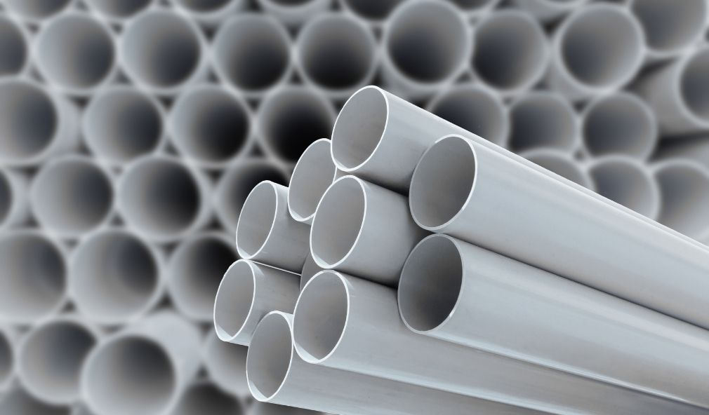
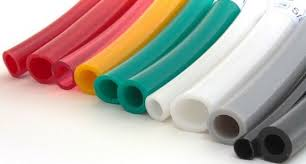
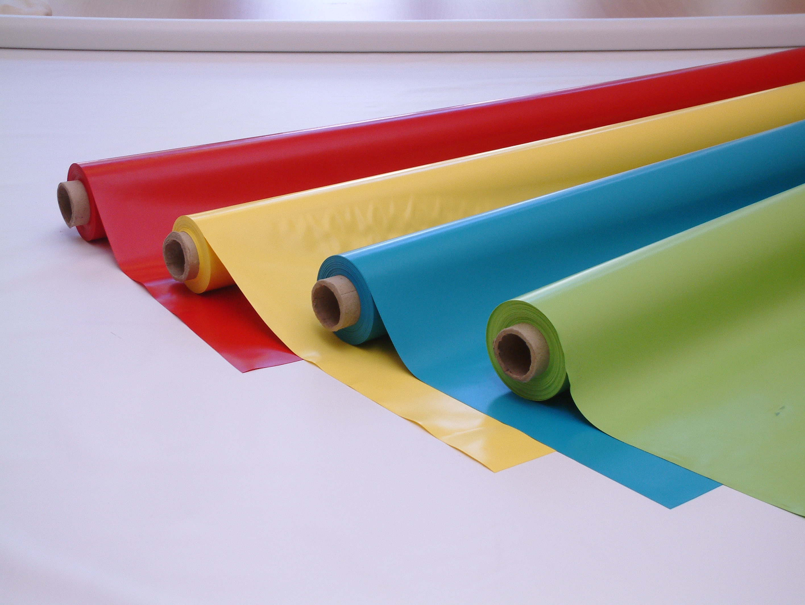
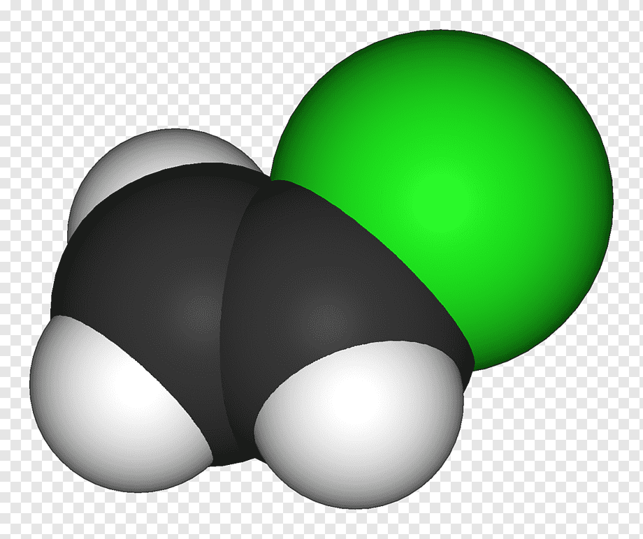

¿QUE ES EL PVC? El PVC (policloruro de vinilo) es una combinación química de carbono, hidrógeno y cloro. Proviene del petróleo bruto (43%) y de la sal (57%). Es con diferencia el plástico con menos dependencia del petróleo. Su principal propiedad: un material NO conductor eléctrico y térmico, es decir, un aislante natural. |
 | |
|  | ¿PARA QUE SE UTILIZA? |  |
| se utiliza en una variedad de aplicaciones, como edificación y construcción, cuidado de la salud, electrónica, automóviles y otros sectores, en productos que van desde tuberías y revestimientos, bolsas de sangre y tubos hasta alambres | ||
| PROPEDADES FISICAS Y QUIMICAS | ||
-AISLANTE NATURAL -IMPERMEABLE -SOLIDO -ALTOS P DE F Y E -COMBUSTION COMPLETA CON O se forma CO2 -ES UN POLIMERO HECHO DE MUCHOS MONOMEROS -COMBUSTION IMCOMPLETA SE FORMA CO -CUANDO SE QUEMA PRODUCE DIOXINAS -DIFICILMENTE FLAMABLE
|
 | |
| PROCESO DE CREACION DE UN MODELO TRIDIMENCIONAL ECOLOGICO Y BIODEGRADABLE |  |
 |
| EL PVC EN LA VIDA COTIDIANA |  |
|